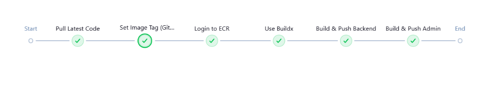
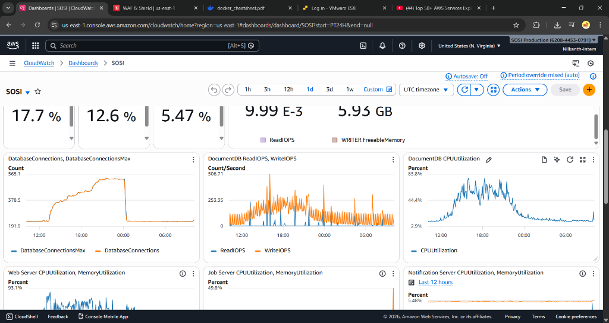

12-Week Comprehensive Training & Project Experience
DevOps is a culture and set of practices that unifies software development (Dev) and IT operations (Ops). It aims to shorten the development lifecycle and provide continuous delivery with high software quality.
Continuous Integration & Deployment automates the building, testing, and rollout of applications reliably.
Managing and provisioning computing infrastructure through code instead of manual processes.
Packaging applications into isolated containers and orchestrating them efficiently across clusters.
Leveraging highly available, scalable cloud environments like AWS for modern architecture.
A CI/CD pipeline is an automated series of steps that must be performed to deliver a new version of software.
Developers frequently merge code changes into a central repository. Automated builds and tests are run to ensure code quality.
Every change that passes all stages of your production pipeline is released to your customers automatically.
Replacing manual infrastructure management with declarative configuration files.
Containers package an application and all its dependencies into a single, standard unit for software development.
An open-source system for automating deployment, scaling, and management of containerized applications.
Virtual servers in the cloud, offering resizable compute capacity.
Object storage built to store and retrieve any amount of data.
Logically isolated section of the AWS Cloud for secure resources.
Securely manage access to AWS services and resources.
On code push
Automated tests
Docker image
Securely rollout
Executing the GitHub Actions pipeline to showcase real-time testing, building, and deployment.

Pulling the latest code and dynamically setting the image tag based on the Git commit SHA for traceability.
Authenticating with AWS ECR and using Docker Buildx to concurrently build optimized images.
Securely pushing both the Backend and Admin services to the Elastic Container Registry for deployment.
Implemented comprehensive monitoring and alerting for the production environment using AWS CloudWatch.
Real-time tracking of CPU & Memory utilization across Web Servers and Job Servers.
Monitoring DocumentDB Read/Write IOPS, Connection Counts, and CPU usage to ensure data availability.

Comprehensive stack utilized during the internship and projects
Replacing manual tasks with automated scripts and pipelines.
Integrating security checks early via DevSecOps principles.
Mastering Git branching and effective peer reviews.
Adopting enterprise-level standards for cloud architecture.
Any Questions?
Special thanks to my mentors and faculty for their invaluable guidance.